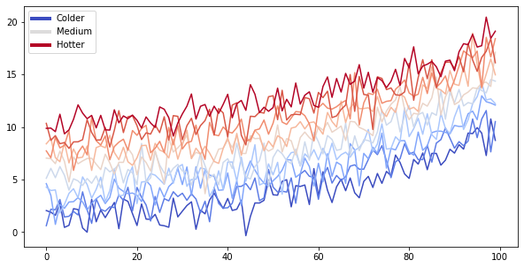

Diminishing reward
5. Diminishing reward¶
Chapter goes here. This one is the interactive notebook see the Figure 5.1.
from matplotlib import rcParams, cycler
import matplotlib.pyplot as plt
import numpy as np
import pathlib
plt.ioff() # turn off interactive plotting
plot_dir = f'{pathlib.Path().absolute()}/plots'
# Fixing random state for reproducibility
np.random.seed(19680801)
N = 10
data = [np.logspace(0, 1, 100) + np.random.randn(100) + ii for ii in range(N)]
data = np.array(data).T
cmap = plt.cm.coolwarm
rcParams['axes.prop_cycle'] = cycler(color=cmap(np.linspace(0, 1, N)))
from matplotlib.lines import Line2D
custom_lines = [Line2D([0], [0], color=cmap(0.), lw=4),
Line2D([0], [0], color=cmap(.5), lw=4),
Line2D([0], [0], color=cmap(1.), lw=4)]
fig, ax = plt.subplots(figsize=(10, 5))
lines = ax.plot(data)
ax.legend(custom_lines, ['Colder', 'Medium', 'Hotter'])
plt.savefig(f'{plot_dir}/plot.png', transparent=False, bbox_inches='tight')

Fig. 5.1 This is a caption in Markdown Is latex also supported? \(1 = \frac{1}{n+2}\)!¶